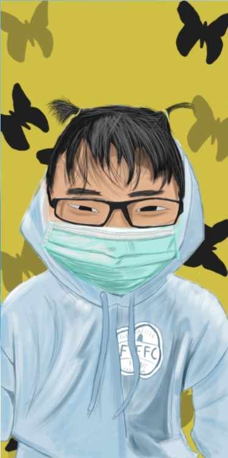

Your Art103 Oblique Stratagies Assignment 1
“The comfort zone is a great enemy to creativity.” -Dan Stevens
Part 1
This was our first assignment where a group of us were given three prompts and we were to make something and our phrase was "Cut a vital connection"

Part 2
The first two quotes relate to our creative process that we practice and identify with as every artist has their own unique approach to art and how they find motivation or what gets them into art. The third quote is a process that we don't follow but we find interesting.
“The comfort zone is a great enemy to creativity.” -Dan Stevens
The reason I chose this quote is because I feel like this is where I am most of the time and is the reason I am often in a stump. Because I rather play games in my spare time rather than work on improving my art skills, my art skills stay constant rather than improving.
I have no special talent. I am only passionately curious. –Albert Einstein
Art is not something I started out because I wanted to make art. It started because I was put in an art class in high school and I would laugh with my friends about how bad my art was and over time that changed to I want to see where this can lead me.
Solitude is creativity’s best friend, and solitude is refreshment for our souls. – Naomi Judd
